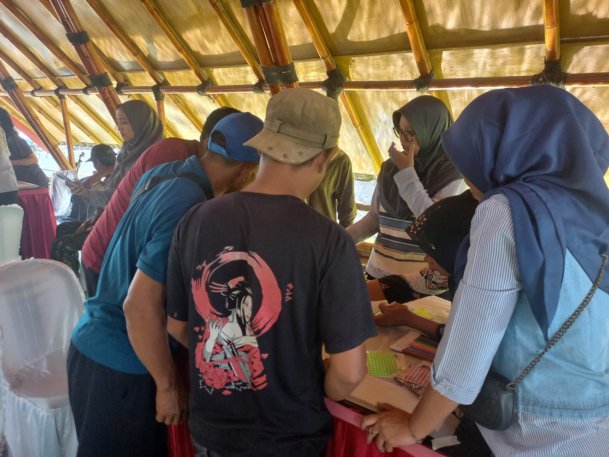

AI for Just Climate Futures
How can AI support climate adaptation shaped by local communities?
Explore the workshop
About the project
Official records can miss the environmental changes residents observe and the ways they adapt. AI for Just Climate Futures explores how residents’ knowledge can shape the design of AI tools for climate adaptation alongside data from government and the private sector.
The study covers Semarang, Indonesia, and Ho Chi Minh City, Vietnam. In Semarang, it centres on fishing communities where rising seas and flooding affect homes and livelihoods.
Read the research overviewCommunity Knowledge Workshop
The workshop explored how tidal flooding, sinking ground and coastal land loss affect daily life in Tambak Lorok, and how residents adapt. The programme included group discussions and walking interviews alongside mapping and timeline sessions.
Open map & timeline- Community map
- Participants marked places associated with development, community assets and local risks.
- Environmental history timeline
- Participants recorded events they remembered, changes they experience today and hopes for the years ahead.
The team organised the workshop materials between September and November.
January workshop plan
Residents and local youth will try three activities with the mobile prototype.
-
Community Memory Walk
Residents choose stops. Youth mark them on the map and check their notes with the residents who shared the stories.
-
Two Routes, One Destination
Groups record two routes with Strava and use GPX tracks and photos to discuss why residents choose each route.
-
Community Map Review
Residents revisit familiar places on the map and suggest corrections or add missing stories.
The prototype is in Indonesian. Trial records are saved in this browser.
Workshop photographs
Tambak Lorok workshop documentation · September 2026


Project team
Civic Resilience Lab
-
 Chaewon Ahn Director
Chaewon Ahn Director -
 Jeff Hou Director
Jeff Hou Director
-
 Febriani Valentina Br Sihombing Research Assistant
Febriani Valentina Br Sihombing Research Assistant -
 Kyuri Lee Research Assistant
Kyuri Lee Research Assistant -
 Sallomita Febrina Research Assistant
Sallomita Febrina Research Assistant -
Shangen Chi Research Assistant
-
 Shreya Murali Research Assistant
Shreya Murali Research Assistant -
Vincent Gavriel Julijanto Research Assistant
-
 Yuezhi Wang Research Assistant
Yuezhi Wang Research Assistant
Collaborators
- Lulut Indrianingrum
- Catharina Dwi Astuti Depari